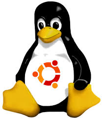

Cursus
Linux Basic - Ubuntu

i.s.m. Syntra Limburg
Me
Ludwig Heymbeeck
ludwigheymbeeck@gmail.com
@ludwigheymbeeck
https://github.com/ludwigheymbeeck
Overzicht cursus
- Achtergrond; Ubuntu installaties
- Basis Linux systeemconcepten
- Gebruik van GNOME/Unity
- Command-Line gereedschappen
- Werken met tekstbestanden op Ubuntu; Mail en Web
- Aanmaak en publiceren van documenten; andere Office Software
- Werken met Graphics en Multimedia
- Verbindingen maken met andere systemen
- Bestandsoverdracht en sharing op Ubuntu
- Software ontwikkeling op Ubuntu
Achtergrond van Ubuntu
- Linux is afgeleid van Unix
- Ubuntu is afgeleid van Linux
Geschiedenis

Geschiedenis (vereenvoudigd)
Linux Architecture

Ubuntu installatie
- Installeer VirtualBox: www.virtualbox.org
- Installeer Ubuntu: www.ubuntu.com
Ubuntu - Unity UI
This initial view is comprised of the The Desktop Background and two bars—one is
horizontally located at the top of your desktop called The Menu Bar, and the other
bar is vertically oriented at the far left, called the Launcher.
Ubuntu - Launch Term

- Type here: Term
- Next click on Term icon
Linux Commands - More Info...
man <command>: all information about the command
<command> --help: available options for that command
e.g.: man ls
ls --help
Let's Code!
Geef volgende commando's in aan de prompt en probeer ze te begrijpen.
Experimenteer maar en stel vragen indien nodig:
echo hello world
passwd
date
hostname
arch
uname -a
dmesg | more(you may need to press q to quit)
uptime
who am i
who
id
last
finger
w
top (you may need to press q to quit)
echo $SHELL
man ls (you may need to press q to quit)
man who (you may need to press q to quit)
clear
cal 2000
cal 9 1752(do you notice anything unusual?)
bc -l(type quit or press Ctrl-d to quit)
echo 5+4 | bc -l
yes please(you may need to press Ctrl-c to quit)
time sleep 5
history
Linux Files and Directories
Gedeeltelijke structuur
Basic Linux - Typical Directories
| DIRECTORY |
TYPICAL CONTENTS |
| / |
The "root" directory |
| /bin |
Essential low-level system utilities |
| /usr/bin |
Higher-level system utilities and application programs |
| /sbin |
Superuser system utilities (for performing system administration tasks) |
| /lib |
Program libraries (collections of system calls that can be included
in programs by a compiler) for low-level system utilities |
| /usr/lib |
Program libraries for higher-level user programs |
| /tmp |
Temporary file storage space (can be used by any user) |
| /home |
User home directories containing personal file space for
each user. Each directory is named after the login of the user. |
| /etc |
System configuration and information files |
| /dev |
Hardware devices |
| /proc |
A pseudo-filesystem which is used as an interface to the kernel.
Includes a sub-directory for each active program (or process). |
Directory and File Commands
mkdir: make directories Usage: mkdir [OPTION] DIRECTORY...
e.g.: mkdir userdir
ls: list directory contents Usage: ls [OPTION]... [FILE]...
e.g.: ls, ls -l, ls userdir
cd: changes directories Usage: cd [DIRECTORY]
e.g.: cd userdir
pwd: print name of current working directory
Usage: pwd
copy files and directories Usage: cp [OPTION]... SOURCE DEST
e.g.: cp sample.txt sample_copy.txt
cp sample_copy.txt target_dir
move (rename) files Usage: mv [OPTION]... SOURCE DEST
e.g.: mv source.txt target_dir
mv old.txt new.txt
rm: remove files or directories Usage: rm [OPTION]... FILE...
e.g.: rm file1.txt , rm rf some_dir
find: search files in directory hierarchy
Usage: find [OPTION] [path] [pattern]
e.g.: find file1.txt, find name file1.txt
Let's Code!
Probeer de volgende commandovolgorde uit:
cd
pwd
ls -al
cd .
pwd (waar bevind je je nu?)
cd ..
pwd
ls -al
cd ..
pwd
ls -al
cd ..
pwd (wat gebeurt er nu?)
cd /etc
ls -al | more
cat passwd
cd -
pwd
Onderzoek verder het filesysteem met de commando's cd, ls, pwd and cat.
Kijk in /bin, /usr/bin, /sbin, /tmp and /boot. Wat zie je?
Let's Code!
Onderzoek /dev. Kun je bepalen welke devices beschikbaar zijn? Welke zijn character-oriented
en welke block-oriented? Kan je je tty (terminal) device (typen van 'who am i' kan helpen)
bepalen? Wie is de eigenaar van je tty (gebruik ls -l hiervoor)?
Onderzoek /proc. Laat de inhoud van de bestanden interrupts, devices, cpuinfo, meminfo en
uptime zien gebruik makende van het commando cat. Kun je zien waarom we zeggen dat /proc een
pseudo-filesysteem is welk toegang geeft tot de kernel structuren?
Ga naar de home directory van een andere gebruiker dmv cd ~username.
Ga vervolgens terug naar je home directory.
Maak de subdirectories work en play.
Delete subdirectory work.
Copieer de file /etc/passwd naar je home directory.
Verplaats de file vervolgens naar de subdirectory play.
Ga naar de subdirectory play en creeer een symbolische link met naam terminal naar je tty device.
Wat gebeurt er als je een link naar tty device maakt?
Wat is het verschil tussen een lijst van inhoud van directory play met ls -l en ls -L?
Disk and Partitions
fdisk: partition manipulator e.g.: sudo fdisk -l`
mount: mount a file system Usage: mount t type device dir
e.g.: mount /dev/sda5 /media/target
umount: unmount file systems Usage: umount [OPTIONS] dir | device...
e.g.: umount /media/target
du: estimate file space usage Usage: du [OPTION]... [FILE]...
e.g.: du
df: filesystem disk space usage Usage: df [OPTION]... [FILE]...
e.g.: df
Users and Groups
Most Linux systems use the local /etc/passwd and /etc/group files for
authentication and group membership information.
An entry in the /etc/passwd file is the following:
ludwig:x:1000:1000:Ludwig Heymbeeck,,,:/home/ludwig:/bin/bash
The fields in this entry are the following:
ludwig: My login name.
x: The password field. In this case, an x means that password
information is actually stored in the file /etc/shadow.
1000: My user ID, which is the numeric value associated with my login name.
1000: The numeric group ID of the default group of which I am a member.
Ludwig Heymbeeck: A field containing my full name and other text information such
as office location and office and home phone numbers.
/home/ludwig: My home directory.
/bin/bash: The application that runs when I log in, in this case a shell.
passwd: update a user's password Usage: passwd [OPTION]
e.g.: passwd
who: show who is logged on Usage: who [OPTION]
e.g. who , who b , who q
File Permissions
3 types of file permissions: read, write, execute
10 bit format from 'ls -l' command
1 2 3 4 5 6 7 8 9 10
permissions: file type owner group others
permissions: read = 4, write = 2, execute = 1
chmod: change file permissions Usage: chmod [OPTION] [MODE] [FILE]
e.g.: chmod 744 calculate.sh
chown: change file owner Usage: chown [OPTION]... OWNER[:[GROUP]] FILE...
e.g.: chown jef myfile.txt
chgrp: change group owner Usage: chgrp [OPTION]... OWNER[:[GROUP]] FILE...
e.g.: chgrp groupofjef myfile.txt
Privileged Operations
In Linux (and Unix in general), there is a SuperUser named Root. The Windows equivalent
of Root is Administrators group. The SuperUser can do anything and everything, and thus
doing daily work as the SuperUser can be dangerous.
By default, the Root (superuser) account password is locked in Ubuntu. This means that you
cannot login as Root directly or use the su command to become the Root user.
Change user ID e.g.: sudo -i -u ludwig
Execute a command as another user e.g.: sudo -u www vi index.html
sudo shutdown
sudo ls /usr/local/protected
To start a root shell (i.e. a command window where you can run Root commands)
e.g.: sudo -i
Graphical sudo
You should never use normal sudo to start graphical applications as Root. You should
use gksudo to run such programs.
e.g.: gksudo gedit /etc/fstab
Let's Code!
Describe three different ways of setting the permissions on a file or directory to r--r--r--.
Create a file and see if this works.
Team up with a partner. Copy /bin/sh to your home directory. Type "chmod +s sh".
Check the permissions on sh in the directory listing.
Now ask your partner to change into your home directory and run the program ./sh.
Ask them to run the id command. What's happened?
Your partner can type exit to return to their shell.
What would happen if the system administrator created a sh file in this way?
Why is it sometimes necessary for a system administrator to use this feature using
programs other than sh? Delete sh from your home directory (or at least to do a chmod -s sh).
Modify the permissions on your home directory to make it completely private.
Check that your partner can't access your directory. Now put the permissions back to how they were.
Type umask 000 and then create a file called world.txt containing the words "hello world".
Look at the permissions on the file. What's happened? Now type umask 022 and create a file
called world2.txt. When might this feature be useful?
Create a file called "hello.txt" in your home directory using the command cat -u > hello.txt.
Ask your partner to change into your home directory and run tail -f hello.txt.
Now type several lines into hello.txt. What appears on your partner's screen?
Use find to display the names of all files in the /home subdirectory tree.
Can you do this without displaying errors for files you can't read?
Use find to display the names of all files in the system that are bigger than 1MB.
Let's Code! (vervolg)
Use find and file to display all files in the /home subdirectory tree, as well as a guess at
what sort of a file they are. Do this in two different ways.
Use grep to isolate the line in /etc/passwd that contains your login details.
Use find and grep and sort to display a sorted list of all files in the /home subdirectory tree
that contain the word hello somewhere inside them.
Use locate to find all filenames that contain the word emacs. Can you combine this with grep
to avoid displaying all filenames containing the word lib?
Create a file containing some lines that you think would match the regular expression:
(^[0-9]{1,5}[a-zA-z ]+$)|none and some lines that you think would not match.
Use egrep to see if your intuition is correct.
Archive the contents of your home directory (including any subdirectories) using tar and cpio.
Compress the tar archive with compress, and the cpio archive with gzip.
Now extract their contents.
On Linux systems, the file /dev/urandom is a constantly generated random stream of characters.
Can you use this file with od to printout a random decimal number?
Type mount (with no parameters) and try to interpret the output.
Personalizing Desktop
Adding and removing applications from the Launcher
There are two ways to add an application to the Launcher:
‣ Open the Dash, find the application to add, and drag and drop it to the Launcher
‣ Run the application you want to add to the Launcher, right-click on the application’s icon
on the Launcher, and select Lock Launcher.
To remove an application from the Launcher, right-click on the application's icon,
then select Unlock from Launcher.
Nautilus File Manager
Nautilus File Manager
Opening files
To open a file, you can either double-click on its icon or right-click the icon
and select one of the Open With options.
Creating new folders
To create a new folder from within Nautilus, click File ‣ Create New Folder.
Then, name the folder that appears by replacing the default "Untitled Folder" with
your desired label (e.g., "Personal Finances"). You can also create a new folder by
pressing Ctrl+Shift+N, or by right-clicking in the file browser window and selecting
Create New Folder from the popup menu (this action will also work on the desktop).
Copying files and folders
You can copy files or folders in Nautilus by clicking Edit ‣ Copy, or by right-clicking
on the item and selecting Copy from the popup menu. When using the Edit menu in Nautilus,
make sure you’ve selected the file or folder you want to copy first (by left-clicking on
it once). Multiple files can be selected by left-clicking in an empty space (i.e., not
on a file or folder), holding the mouse buttonon down, and dragging the cursor across
the desired files or folders.
Moving files and folders
Select the item you want to move then click Edit ‣ Cut. Navigate to the desired location,
then click Edit ‣ Paste. As with the copy command above, you can also perform this action
using the right-click menu, and it will work for multiple files or folders at once. An
alternative way to move a file or folder is to click on the item, and then drag it to
the new location.
Command Line - Shell
A shell is a program which reads and executes commands for the user. Shells also
usually provide features such job control, input and output redirection and a command
language for writing shell scripts. A shell script is simply an ordinary text file
containing a series of commands in a shell command language (just like a "batch file"
under MS-DOS).
There are many different shells available on Linux systems (e.g. sh, bash, csh, ksh,
tcsh etc.), and they each support a different command language. Here we will discuss
the command language for the Bourne shell sh since it is available on almost all Linux
systems (and is also supported under bash and ksh). Bash is the default shell for Ubuntu.
Let's Code!
Shell Scripting
Maak een shell script bestand met naam simple aan met volgende inhoud:
#!/bin/sh
# this is a comment
echo "The number of arguments is $#"
echo "The arguments are $*"
echo "The first is $1"
echo "My process number is $$"
echo "Enter a number from the keyboard: "
read number
echo "The number you entered was $number"
Laat de bestanden zien met protecties:
ls -l simple
We moeten simple bestand uitvoerbaar maken:
chmod +x simple
Voor nu simple shell script uit door:
./simple hello world
Start-up Shell Scripts
When you first login to a shell, your shell runs a systemwide start-up script
(usually called /etc/profile under sh, bash and ksh and /etc/.login under csh).
It then looks in your home directory and runs your personal start-up script
(.profile under sh, bash and ksh and .cshrc under csh and tcsh). Your personal
start-up script is therefore usually a good place to set up environment variables
such as PATH, EDITOR etc. For example with bash, to add the directory ~/bin to your PATH,
you can include the line:
export PATH=$PATH:~/bin
in your .profile. If you subsequently modify your .profile and you wish to import
the changes into your current shell, type:
$ source .profile
or
$ . ./profile
The source command is built into the shell. It ensures that changes to the environment
made in .profile affect the current shell, and not the shell that would otherwise be
created to execute the .profile script.
With csh, to add the directory ~/bin to your PATH, you can include the line:
set path = ( $PATH $HOME/bin )
in your .cshrc.
Let's Code!
Write a shell script which renames all .txt files as .text files. The command basename
might help you here.
Write a shell script called pidof which takes a name as parameter and returns the PID(s) of
processes with that name.
Shell scripts can also include functions. Functions are declared as:
function funcname() {
statements
}
and invoked as funcname param1 param2... The parameters passed to the function are
accessible inside the function through the variables $1, $2, etc. Now add a usage()
function to your pidof script which prints usage instructions. Call usage() if the wrong
number of parameters is passed to the script.
Modify your .bash_profile script so that your PATH includes the current directory (.) and
so that your environment variable EDITOR is set to vi (or whatever else you prefer to use).
Run the modified script using source .bash_profile and check that the changes you made have
been applied to the current shell (type set).
Working with Bash Shell
You can simply type history at any shell prompt, which displays something like the following:
$ history
233 make bootstrap
234 info -f gcc.info
235 export INFOPATH=`pwd`:$INFOPATH
236 vi ~/.bashrc
237 pushd ~/new
237 ls /mnt/terastation/CDs
238 pushd /mnt/terastation/CDs
239 find . -name “T*.txt”
[much more output deleted]
You can redisplay any recently executed command by typing the Control-p command at any command
prompt. Each time you type Control-p, the shell displays the previous command in its history list.
Or you can use the Up Arrow Key.
Using Wildcards
The shell supports four primary types of wildcards:
?: (question mark) which matches any single character
*: (asterisk) which matches any group of characters
{string1, string2}: (curly bracket) which represents either string1 or string2
[char1,char2,...]: (square bracket) which matches any character or range of characters inside
the square brackets
e.g.:
$ ls
d1t01.flac d1t01.mp3 d1t01.wav d1t02.flac d1t02.mp3 d1t02.wav d1t03.flac d1t03.mp3 d1t03.wav
d2t01.flac d2t01.mp3 d2t01.wav d2t02.flac d2t02.mp3 d2t02.wav d2t03.flac d2t03.mp3 d2t03.wav
$ ls d?t01.mp3
d1t01.mp3 d2t01.mp3
$ ls *.mp3
d1t01.mp3 d1t02.mp3 d1t03.mp3 d2t01.mp3 d2t02.mp3 d2t03.mp3
$ ls *.{flac,wav}
d1t01.flac d1t01.wav d1t02.flac d1t02.wav d1t03.flac d1t03.wav
d2t01.flac d2t01.wav d2t02.flac d2t02.wav d2t03.flac d2t03.wav
$ ls d1t0[12].mp3
d1t01.mp3 d1t02.mp3
$ ls d1t0[12].{flac,wav}
d1t01.flac d1t01.wav d1t02.flac d1t02.wav
Pipes and Redirection
Linux makes it easy to write the output of a command to a file by using what is called output
redirection, which is represented on the command line by the greater-than symbol (‘>’). As an
example, the following command writes the output of the ls command to the temporary file
/tmp/my_dir_list.txt:
$ ls > /tmp/my_dir_list.txt
You could then count the number of lines in that file using the wc -l command, as in the
following example:
$ wc -l /tmp/my_dir_list.txt
8
However, you could write it in one command line with a pipe as follows:
$ ls | wc -l
8
Bash Configuration
When you start a bash shell on your Ubuntu system, it reads a certain amount of configuration
information from various text files on your system. In the order they’re read, these
configuration files are the following:
/etc/profile (login shells only)
/etc/bash.bashrc (all bash shells)
~/.bash_profile (login shells only)
~/.bashrc (all bash shells)
The ~ symbol is a bash shortcut for referring to any user's home directory. ~/.bashrc is the
file .bashrc in the user's home directory;
Environment Variables
Environment variables are variables that are defined in the context of a shell and which are
read and used by applications on your system, including the shell itself. One of the most
commonly used environment variables is the PATH environment variables, which contains a
colon-separated list of directories that the shell searches (in order) to try to find commands.
You can examine the environment variables that are defined in a shell using any of three
mechanisms:
1. using the shell’s built-in set command to display all shell variables that are currently defined
2. using the printenv command to display a list of selected (or all) environment variables that are
currently defined
3. using the shell’s built-in echo command to display the value of a specific environment variable
e.g.
$ echo $PATH
To add a directory (here /usr/wvh/bin) to the list of directories that are searched for
commands, you can execute the following from a shell prompt:
$ export PATH=/usr/wvh/bin:$PATH
Text Files - Editors
standaard editors:
andere editors:
- geany
- sublime text
- brackets
Text Files - vi editor
Although beginners usually find vi somewhat awkward to use, it is useful to learn
because it is universally available (being supplied with all UNIX systems). It
also uses standard alphanumeric keys for commands, so it can be used on almost
any terminal or workstation without having to worry about unusual keyboard mappings.
System administrators like users to use vi because it uses very few system resources.
To start vi, enter:
vi filename
where filename is the name of the file you want to edit. If the file doesn't exist,
vi will create it for you.
Quick reference for vi
Inserting and typing text:
i insert text (and enter input mode)
$a append text (to end of line)
ESC re-enter command mode
J join lines
Cursor movement: Deleting and moving text:
h left Backspace delete character before cursor
j down (only works in insert mode)
k up x delete character under cursor
l right dw delete word
^ beginning of line dd delete line (restore with p or P)
$ end of line <n> dd delete n lines
1 G top of document d$ delete to end of line
G end of document dG delete to end of file
<n> G go to line <n> yy yank/copy line (restore with p or P)
^F page forward <n> yy yank/copy <n> lines
^B page backward
w word forwards
b word backwards
Search and replace:
%s/<search string>/<replace string>/g
Miscellaneous:
u undo
:w save file
:wq save file and quit
ZZ save file and quit
:q! quit without saving
Let's Code!
Gebruik de vi editor voor het aanmaken van een bestand met naam testvi.txt
en met de volgende inhoud:
Dit is een test bestand voor vi.
Er zijn in dit bestand maar 2 lijnen.
Let's Code!
nano editor
Gebruik nu de nano editor voor het aanmaken van een bestand met naam testnano.txt
en met de volgende inhoud:
Dit is een test bestand voor nano.
Er zijn in dit bestand maar 2 lijnen.
Tip: Gebruik 'man nano' commando om nano commando's aan te leren en gebruiken.
Let's Code!
gedit editor
Gebruik nu de gedit editor voor het aanmaken van een bestand met naam testgedit.txt
en met de volgende inhoud:
Dit is een test bestand voor gedit.
Er zijn in dit bestand maar 2 lijnen.
Tip: Gebruik 'man gedit' commando om nano commando's aan te leren en gebruiken.
Thunderbird Mail - Client Set-up
Thunderbird is an email client developed by Mozilla and is easy to setup and use.
In the top right corner of the Ubuntu desktop you will see an envelope icon in the
notification area. This is the messaging menu. From here, you can launch Thunderbird
by clicking set up mail.
Once completed, click the continue button. Thunderbird will automatically set up your email
account for you. When Thunderbird finishes detecting your email settings, click create
account and Thunderbird will do the rest. You can also set Thunderbird as your default news
and RSS reader by checking the boxes in the pop-up box that appear after you click create
your account. If you don’t want to see this message box every time you start Thunderbird,
simply deselect Always perform this check when starting Thunderbird. You are now ready
to start using Thunderbird.
Thunderbird Mail - Send/Receive
Web - Firefox
Once you have connected to the Internet, you should be able to browse the
web. Mozilla Firefox is the default application for this in Ubuntu.
Web - Chrome
Google Chrome is not default available in Ubuntu, but can be easily installed
by going to: www.google.com/chrome/
Documents - LibreOffice Suite
LibreOffice suite is the default office suite when working with:
word documents, spreadsheets, and slide presentations.
Documents - Scribus
Scribus is an Open Source Desktop Publishing software default
available in Ubuntu.
Graphics - General
Default installed in Ubuntu:
1. LibreOffice Draw
2. GIMP
3. Inkscape
Graphics - LibreOffice Draw
Graphics - GIMP
Graphics - Inkscape
Multimedia - Sound
Multimedia - CD/DVD
Connecting Other Systems - Secure Connections
Connecting Other Systems - VNC
Connecting Other Systems - Remote Windows Terminal
File Transfer and Sharing - Transfer to other systems
FTP
Shares and Remote Windows Systems
NFS
File Transfer and Sharing - Peer-to-Peer
Software Development - Installation
Software Development - IDE
Software Development - Source Code Control